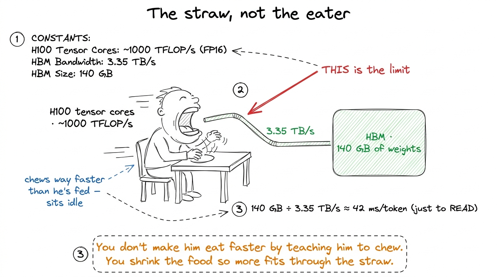
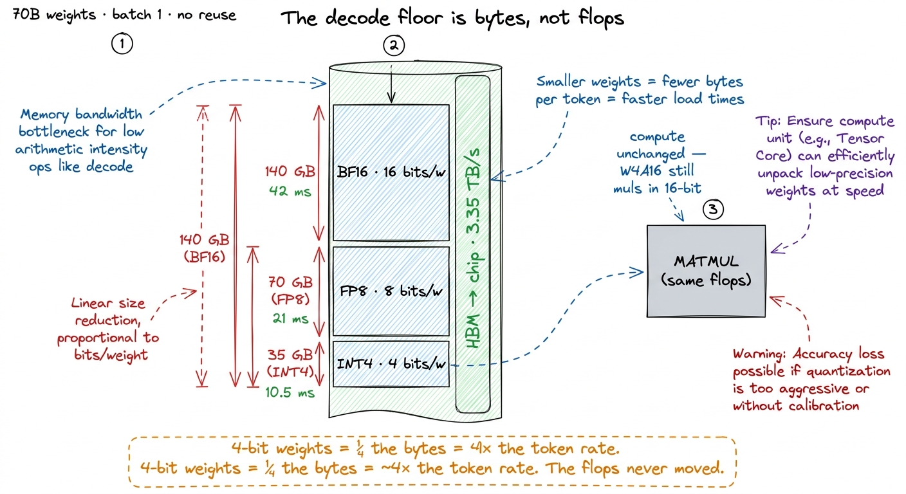
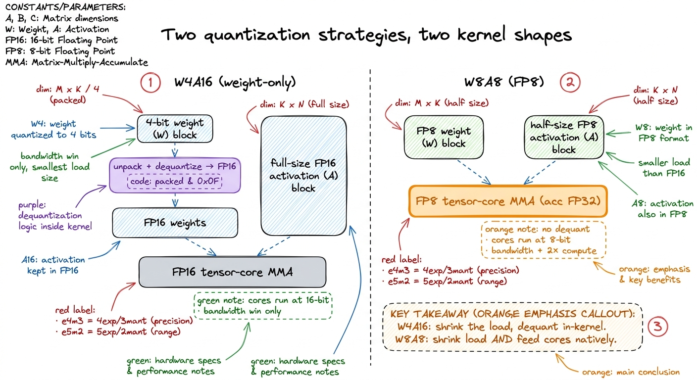
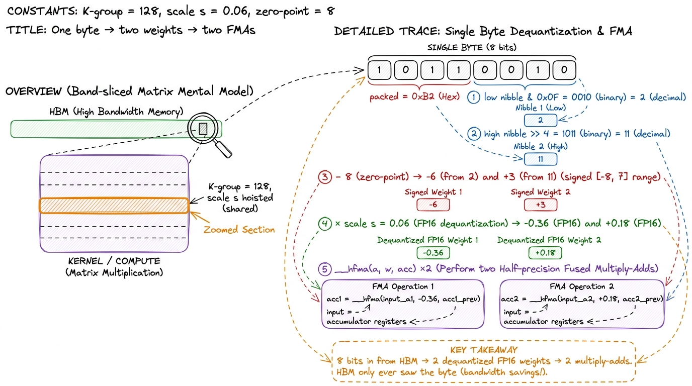
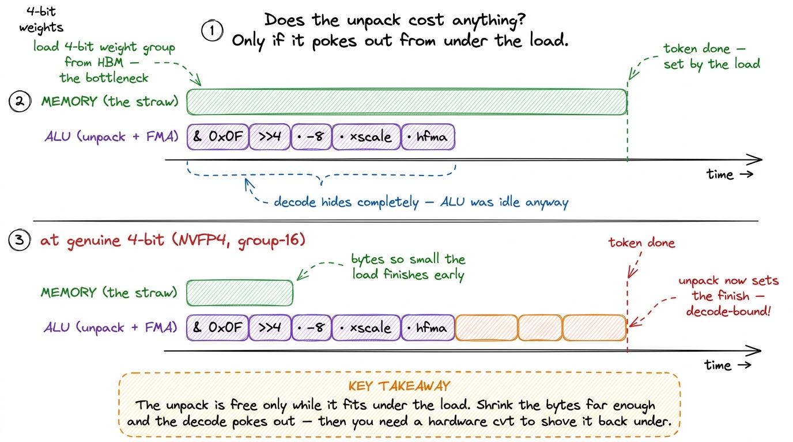
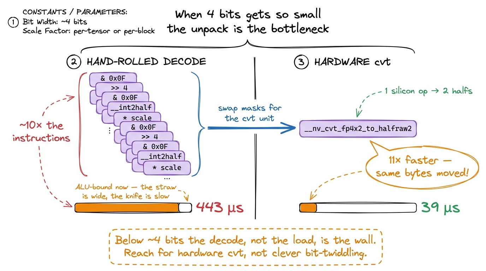
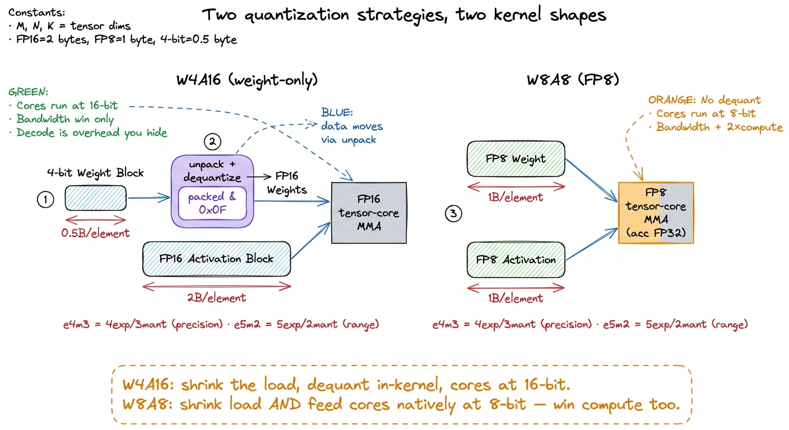
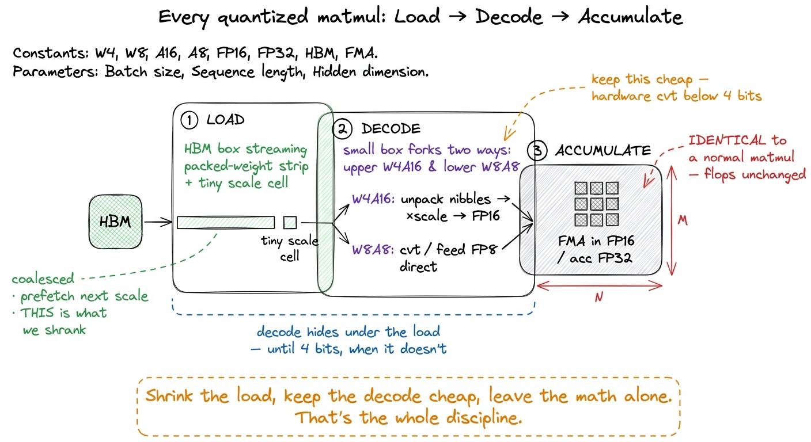

Quantization kernels: FP8, INT4, W4A16 FP8
Let me start with the most basic fact about a large language model, because everything in this article follows from it. A model is a pile of numbers — its weights. When you run the model to generate text, you take those numbers and multiply your input by them. That is almost the entire job of the hardware: fetch weights, multiply, repeat. A 70-billion-parameter model has 70 billion of these weights, and at every single step of generation you have to touch a huge fraction of them.
Now here is the question this article answers: if the weights are the cost, what happens if we simply store them in fewer bits? Not fewer weights — the same 70 billion numbers — but each one written down more coarsely, in 4 bits instead of 16. That is quantization. And the surprising claim, the one we are going to earn from first principles, is that squeezing each weight from 16 bits to 4 bits makes token generation roughly 4× faster — even though the model does exactly the same amount of arithmetic. Same multiplies. Same adds. Four times faster. If that sounds like it shouldn't be possible, good. That tension is the whole article.
To resolve it we need one prerequisite, and I'll build it from scratch: the idea that a modern kernel is almost never limited by how fast it can multiply. It is limited by how fast it can fetch numbers to multiply. Once you believe that, quantization stops being magic and becomes the most obvious optimization in the world.
Why fetching is the bottleneck, not multiplying
Let me convince you with a single number. An NVIDIA H100 GPU can do a staggering amount of arithmetic — hundreds of trillions of multiply-adds per second. But it reads from its main memory (HBM, high-bandwidth memory) at about 3.35 TB/s. Those two speeds are wildly out of balance. The chip can chew through numbers far faster than it can be fed them.
Think of it like a champion speed-eater sitting at a table, connected to the kitchen by a single narrow straw.1 This "arithmetic intensity" imbalance is the foundation of the whole site. A GPU has a roofline: below a certain ratio of flops-per-byte you are bandwidth-bound (the straw), above it you are compute-bound (the eater). Decode with batch size 1 lives far down in the bandwidth-bound basement, which is exactly why byte-shrinking tricks like quantization pay off so much there. It does not matter how fast he can chew — his throughput is set by the straw. To make him eat faster you do not teach him to chew faster. You widen the straw, or you shrink the food so more of it fits through per second. Quantization shrinks the food.
Now let's make the decode path concrete, because it is where this bites hardest. When a model generates text one token at a time — the decode phase — it processes a single token per step. A weight matrix gets read from HBM, used for exactly one multiply against that one token's vector, and then thrown away. There is no reuse. You dragged a giant matrix out of memory to use it once.2 "No reuse" is the defining feature of batch-size-1 decode and the reason it is so brutally memory-bound. The batched-decode article is about clawing reuse back by stacking many sequences so one weight load serves many tokens; quantization is the orthogonal lever — it shrinks the bytes each load moves, and it helps no matter what the batch size is.
So what does one token cost? Just add up the bytes. A 70B model in BF16 (16 bits = 2 bytes per weight) is 70 billion × 2 = 140 GB. To produce one token you must stream all 140 GB past the arithmetic units at least once. At 3.35 TB/s:
140 GB ÷ 3.35 TB/s ≈ 42 milliseconds per token — and that is a hard floor, before a single useful multiply happens.
That 42 ms is not the time to compute. It is the time to read. The multiplies hide underneath it entirely; the eater is idle, waiting on the straw. And this is the crucial realization the rest of the article hangs on: on the decode path, a linear layer costs exactly what it costs to stream its weights out of HBM. Nothing else. Not the flops, not the cleverness of the math — just the bytes.

figure rendering · The GPU can multiply far faster than it can fetch. On decode the tokenNow the payoff is immediate. Halve the precision to FP8 (1 byte per weight) and the model is 70 GB, so the floor halves to ~21 ms/token. Quarter it to 4-bit weights (half a byte per weight) and the model is 35 GB, floor ~10.5 ms/token. The token rate roughly inverts the bytes-per-weight: cut the bytes to a quarter, quadruple the tokens. That is where the 4× came from. It was never about arithmetic. It was about the straw.
The catch: the math never changed
Here is where a careful reader should get suspicious, so let's stop and stare at it. We just claimed a 4× speedup. Did we make the model do less work? No. We are about to multiply the same activation by the same 70 billion weights and produce the same dot products. The number of multiply-adds is identical to the BF16 version.
So how can it be 4× faster if it does the same work?
Because "work" for a GPU on this path is not measured in multiplies — it is measured in bytes moved. We proved that above. The multiplies were already free; they were hiding under the byte-fetching the whole time. When we shrink the weights to a quarter of the bytes, the fetching finishes 4× sooner, and the multiplies — which were never the bottleneck — still finish underneath. This is why the question "does quantization reduce flops?" is the wrong question to ask of a decode kernel. It doesn't, and it doesn't need to.
Let me name the specific scheme that captures this, because it will anchor everything: W4A16. Weights in 4 bits, activations in 16 bits. The trick, which we'll dissect in detail, is that the kernel reads 4-bit weights, expands them back up to 16-bit inside the kernel, and does the actual multiply in 16-bit. Same math as BF16. A quarter of the load. On a bandwidth-bound kernel, that is the entire speedup, and it is why W4A16 is the workhorse of LLM serving.

figure rendering · On the decode path a linear layer costs exactly what it costs to streaThere is a price, and it is honesty time: accuracy. Four bits can represent only sixteen distinct values. Sixteen. A weight matrix in a real model spans a wide range — a handful of large values, a sea of tiny ones — and forcing all of that into sixteen levels throws information away. Done carelessly, the model gets measurably worse. So the real craft of quantization is not "use fewer bits"; it is "use fewer bits without breaking the model." And the tool for that turns out to shape the kernel's entire data layout. Let's build it up.
What a quantized weight actually is
Let's do the smallest possible example by hand, because the word "quantize" hides a very simple idea. Suppose I have four real weights:
[0.10, -0.42, 0.31, -0.08]I want to store each in a 4-bit signed integer, which can hold values from −8 to +7 (sixteen levels). But my weights are fractions near zero. The integers can't represent 0.31 directly. So I introduce a scale: one shared multiplier that converts integers back into the real range.
Pick the largest magnitude, 0.42, and map it to the largest integer, 7. That gives a scale of 0.42 / 7 = 0.06. Now I quantize each weight by dividing by the scale and rounding:
0.10 / 0.06 ≈ 2, −0.42 / 0.06 = −7, 0.31 / 0.06 ≈ 5, −0.08 / 0.06 ≈ −1
I store the integers [2, −7, 5, −1] plus the one scale 0.06. To reconstruct, I multiply back: w ≈ q × scale. So 2 × 0.06 = 0.12 (true value 0.10 — close), −7 × 0.06 = −0.42 (exact), 5 × 0.06 = 0.30 (true 0.31 — close). The reconstruction isn't perfect; the gaps between the sixteen levels are the quantization error. That error is the whole tension.
So a quantized weight is never just an integer. It is always an integer plus a scale, and the real value is w ≈ q × scale (or, for asymmetric schemes, w ≈ (q − zero_point) × scale, where the zero-point handles distributions that aren't centered on zero). Everything interesting now reduces to one design question: how many weights share a single scale?
Scales: per-tensor, per-channel, per-group
The number of weights per scale is a dial, and it trades memory against accuracy directly. Let's walk the dial from cheapest to finest.
Per-tensor: one scale for the entire matrix. This is the cheapest possible — a single float for millions of weights, and in the kernel it's a constant you compute once and reuse forever. But think about what one scale has to cover. If a matrix has a few outlier weights that are 50× bigger than the rest, that outlier stretches the scale, and now every ordinary small weight is being quantized against a scale sized for the giant. The sixteen levels get spread so wide that the small weights all collapse toward the same couple of integers. Accuracy suffers, and it suffers exactly because of outliers.
Per-channel: one scale per output channel — that is, per column of the weight matrix. Now a noisy, outlier-heavy channel gets its own scale and stops poisoning its neighbors. This is the standard choice for weight-only quantization, and it's cheap in a beautiful way: the scale is constant across the entire K-contraction for a given output, so the kernel can accumulate the integer dot product all the way down, then multiply by the single channel scale exactly once at the end.3 Per-channel is cheap only along the output dimension. Per-channel along the contraction (K) dimension is the expensive case — the scale would change as you march down the dot product — so that direction is done as grouping instead, which is the next rung.
Per-group (block): split the contraction dimension K into small groups — commonly 128, or as small as 16 in microscaling formats — and give each little group its own scale. This is what every modern 4-bit scheme uses. Why does it help so much? Because outliers are local. Within any run of 128 weights the range is tight, so sixteen levels land densely and precisely. The cost is that the kernel must fetch and apply a fresh scale every group as it marches down K — which drags scale-handling right into the inner loop.
Is the extra scale traffic a problem? Let's check the napkin math, because this is where per-group earns its dominance. Group size 128 means one FP16 scale (2 bytes) per 128 weights. Those 128 weights, at 4 bits each, are 128 × 0.5 = 64 bytes. So the scale adds 2 / 64 = ~3% overhead on the bytes — for a large accuracy recovery.4 I rounded loosely in the prose; different group sizes and scale dtypes shift this. FP8 scales (1 byte) at group 16 cost 1 byte per 8 bytes of weights ≈ 12.5% — heavier, but microscaling formats accept it because a group of 16 is so tight that it recovers accuracy the coarse formats can't. The NVFP4 microscaling format is exactly this: group 16 with an FP8 (e4m3) scale each. A few percent more bytes to keep the model accurate at 4 bits is an obvious trade, which is why group-128 dominates production.

figure rendering · The same matrix, three scale layouts. Per-tensor is one number; per-grKeep this picture in your head — matrix sliced into bands, each band carrying a scale — because it is the mental model the kernel is built around. The kernel's job is to march down those bands, and where it applies each scale is the entire story of the inner loop.
Dequantize in the kernel: the W4A16 inner loop
Now the central hypothesis, the one that makes W4A16 fast, and it's worth stating as a rule you could tattoo on the kernel:
Never let the 4-bit weights exist in memory as anything but 4-bit.
Why so absolute? Because it's easy to accidentally throw away the entire benefit. Imagine you dequantize the whole matrix back to FP16 in a separate pass and write the result to HBM, then run a normal FP16 matmul on it. Congratulations — you just wrote 140 GB of FP16 weights back to memory and read them again. You moved more bytes than if you'd never quantized. The 4-bit form only helps if HBM never sees anything else. So the dequantize has to happen inside the matmul kernel, on data that is already sitting in registers, right before it's multiplied. The packed 4-bit weights travel through the slow straw; the expansion to 16-bit happens on-chip, for free-ish, in the fast registers.
So here is the loop. The kernel loads packed int4 weights (two 4-bit weights crammed into one byte), unpacks and dequantizes them to FP16 in registers, and feeds the FP16 activations and the just-unpacked FP16 weights into the multiply-accumulate. The activations stay 16-bit the whole way through — that's the "A16" — so accumulation precision and range are exactly what a normal FP16 matmul would give you. Only the weights were ever compressed.
// W4A16 inner loop over one K-group (group size G, e.g. 128).
half s = scales[out_ch][k_group]; // per-group FP16 scale, hoisted
for (int k = 0; k < G; k += 2) {
uint8_t packed = qweight[k >> 1]; // two 4-bit weights in one byte
int q_lo = packed & 0x0F; // low nibble
int q_hi = (packed >> 4) & 0x0F; // high nibble
half w_lo = __int2half_rn(q_lo - 8) * s; // dequantize (zero-point 8)
half w_hi = __int2half_rn(q_hi - 8) * s;
acc = __hfma(a[k], w_lo, acc); // 16-bit activation × 16-bit weight
acc = __hfma(a[k+1], w_hi, acc);
}Let's read it slowly, because every line maps to the mental model. s is the per-group scale, and notice it's fetched once per group and hoisted above the loop — that's the per-group picture from the last figure, one scale reaching across 128 weights.5 Hoisting the scale out of the inner loop is exactly why per-group is affordable: you pay one scale fetch and one register read per group, not per weight. If the scale changed every weight (per-element quantization) this hoist would be impossible and the scale traffic would dominate. The & 0x0F grabs the low nibble; >> 4 & 0x0F grabs the high nibble — that's the "two weights per byte" unpacking. The - 8 recenters the range: a 4-bit unsigned integer holds [0, 15], and subtracting 8 shifts it to the signed [-8, 7] we used in the by-hand example. Then multiply by the scale, and __hfma does the fused multiply-add in 16-bit. Load packed → unpack → scale → FMA. Every production W4A16 kernel has this skeleton; the fancy ones vectorize the nibble unpacking or dequantize eight weights at once with SIMD-in-a-register tricks, but the bones are identical, and the packed weights never leave 4-bit until they're in a register.

figure rendering · Zooming from the whole matrix down to a single byte: two 4-bit weightsWhen the unpack itself becomes the bottleneck
Here is a subtlety I got wrong the first time I reasoned about this, and it's worth dwelling on. Look back at the inner loop: every & 0x0F, every >> 4, every __int2half_rn is a real instruction the GPU has to issue. And there are as many of them as there are weights — 70 billion masks, 70 billion shifts, 70 billion conversions. Isn't that a lot of extra work?
On a well-tuned W4A16 kernel with group-128 on Ampere or Hopper, it's fine — and the reason is exactly the roofline from the start of the article. The kernel was load-bound: the eater was idle, waiting on the straw. All those integer unpack instructions run on the idle ALU, hiding perfectly underneath the memory wait. You're doing extra arithmetic, but you had spare arithmetic capacity to burn. The unpack is free because it fills time the chip was going to waste anyway.

figure rendering · Two timelines on the same axis. Up top, W4A16: the memory load is theBut — and this is the surprising part — push the format low enough and the balance flips. If you shrink the bytes far enough, the load finishes so fast that the decode itself becomes the new bottleneck. The straw got wide enough that now the eater's knife-work (unpacking) is the limit. This is the wall the NVFP4 worklog slams into, and the numbers are a gift because they make the abstract concrete.
In a Blackwell NVFP4 kernel hackathon, someone wrote a genuine 4-bit-float GEMV and hand-rolled the unpacking with bit manipulation. Their naive CUDA version ran at 2000 µs. Profiling revealed the CUDA code was issuing roughly 10× more instructions than a reference implementation — the hand-written decode was drowning the kernel in integer ops. Coalescing memory and adding thread collaboration got it to 443 µs, better but still decode-bound. Then came the fix that matters: they replaced the hand-written unpacking with a hardware conversion intrinsic, __nv_cvt_fp4x2_to_halfraw2, which converts two packed FP4 values to a pair of halfs in one silicon operation, and used __nv_cvt_fp8_to_halfraw for the FP8 scale factors. That single change collapsed the kernel from 443 µs to 39 µs — more than 11× — because it swapped a pile of masks and shifts for one cvt unit that does the decode in hardware.6 The journey didn't stop at 39 µs. Fusing the decode-multiply in inline PTX reached ~27 µs, two-tile instruction-level parallelism ~22.9 µs, and the final submission ~22.3 µs — versus a CuTe DSL template baseline of ~100 µs that the naive hand-written CUDA had started 20× slower than at 2000 µs (the final hand-tuned kernel ended up beating that template baseline by ~4.5×). The lesson is the same at every step: at genuine 4-bit precision the decode is the kernel, so every microsecond you win comes from decoding cheaper, not moving fewer bytes.
The lesson generalizes into a clean rule: at low enough precision, the dequantize is the kernel. When the byte savings are so aggressive that the load is no longer the bottleneck, you win by making the decode cheap — and the cheapest decode is the one the silicon does for you with a cvt intrinsic, not the one you hand-code with masks. This is precisely why Blackwell added native FP4 conversion and MMA paths: NVIDIA saw that at 4 bits the decode would dominate, so they put it in hardware.7 Rule of thumb worth memorizing: W4A16 with group-128 on Ampere/Hopper is comfortably load-bound, and the integer unpack hides fine behind the memory wait. Below that — genuine 4-bit floats, group-16 microscaling — the per-value decode cost catches up to the byte savings, and only hardware conversion units keep the decode free.

figure rendering · Two kernels moving the exact same bytes. The left hand-codes the unpacFP8: e4m3 vs e5m2, and the W8A8 shortcut
Eight bits is the other rung on the ladder, and it changes the tradeoffs in an interesting way, because FP8 is a floating-point format, not an integer one. That matters for a concrete hardware reason we'll get to. But first, the format itself splits into two flavors that differ only in how they divide their 8 bits between exponent and mantissa:
- e4m3 — 1 sign, 4 exponent, 3 mantissa bits. More mantissa means more precision but less range; it saturates around ±448. This is the format for weights and activations in the forward pass, where you want precision and the values are reasonably bounded.
- e5m2 — 1 sign, 5 exponent, 2 mantissa bits. More exponent means wider dynamic range (out to ±57344) but coarser precision. It's the format for gradients in training, where values span a huge range and you care more about not overflowing than about the last bit.8 The e4m3 / e5m2 split is the same "precision vs range" dial as FP16 vs BF16, just at eight bits. Inference kernels almost always mean e4m3 when they say "FP8"; e5m2 shows up in the training backward pass. Both are IEEE-ish but with their own special-value conventions, which is why the decode intrinsic you call has to name the exact format — e.g.
__nv_cvt_fp8_to_halfraw(x, __NV_E4M3).
Now the interesting part. For inference, FP8 usually means W8A8: both weights and activations are 8-bit. And here's the payoff that W4A16 can't offer. Because both operands are 8-bit, and because Hopper and Blackwell tensor cores have native FP8 MMA paths, the tensor cores can consume the low-precision operands directly. There is no dequantize-to-16-bit step at all. The kernel multiplies FP8 × FP8 and accumulates in FP32.9 Accumulation stays in FP32 even though the inputs are FP8 — you need the wide accumulator so that summing hundreds of small FP8 products down the K dimension doesn't lose everything to rounding. The inputs are cheap; the running total is not.
Stop and appreciate why that's a bigger deal than W4A16. In W4A16 the tensor cores still ran at 16-bit — we only won bandwidth, and the decode was pure overhead we had to hide. In W8A8 the tensor cores run at 8-bit natively, which on Hopper is roughly 2× the throughput of FP16. So W8A8 wins bandwidth and compute. That's why FP8 matters for the compute-bound prefill too — where you are limited by the eater's chewing speed — whereas weight-only W4A16 helps mostly the memory-bound decode.

figure rendering · Weight-only 4-bit dequantizes back to 16-bit before the math, so you wSo the split worth memorizing is: W4A16 buys maximum bandwidth savings on memory-bound decode by paying a per-value dequantize (integer unpack in the kernel), while the tensor cores still run at 16-bit. W8A8/FP8 keeps everything 8-bit end to end so the tensor cores run natively at low precision, buying both bandwidth and compute. One shrinks the load; the other shrinks the load and speeds the math.
How a frontier model actually mixes these
This is not academic — the frontier does exactly this mixing, and the details are instructive. DeepSeek's V4-Pro-DSpark is a 1.6-trillion-parameter mixture-of-experts model with 49B activated parameters and a 1M-token context. Its model card makes a very deliberate precision call: FP4 for the MoE expert weights, FP8 for most other parameters, and FP8 for the KV cache.10 Straight from the model card and its vLLM launch example: MoE expert parameters in FP4, most other parameters in FP8, --kv-cache-dtype fp8 for the cache, plus --block-size 256, --moe-backend deep_gemm_mega_moe, and an attention config with use_fp4_indexer_cache. The precision assignment is not uniform — it's targeted.
Why that particular split? Reason it out from everything above. In a mixture-of-experts model the experts are the parameter bulk — the overwhelming majority of the 1.6T weights live in expert matrices, and for any given token only a few experts fire. So the experts are where the memory pressure concentrates, and pushing them to 4 bits is where the bandwidth win is largest. Meanwhile the dense layers and attention weights are fewer but more sensitive — the model's accuracy leans on them harder — so they stay on the safer 8-bit rung. It's the accuracy-vs-bytes dial from earlier, applied selectively: spend your aggressive 4-bit quantization exactly where the parameters are heaviest, and keep 8 bits where the model is fragile.
The KV cache going to FP8 is the same instinct pointed at a different byte hog. On long contexts the KV cache — the stored keys and values for every past token — can rival the weights in size, and at a 1M-token context it dominates memory traffic. Halving it with --kv-cache-dtype fp8 is the same bandwidth argument we opened with, applied to the cache instead of the weights.11 The card notes that at long context the model reaches ~27% of single-token inference FLOPs and ~10% of the KV cache footprint of the prior generation — a reminder that in production the KV cache, not just the weights, is a first-class quantization target. See the KV cache discussion for why it grows linearly with context and becomes the dominant byte-mover on long sequences.
The whole kernel, in three parts
Zoom out, and every quantized matmul — W4A16, W8A8, NVFP4, all of them — has the same three-part shape. The design work is deciding where the boundaries between the parts fall.
- Load the packed low-precision weights and their scales from HBM. This is the step you are optimizing for — the entire point was to make it small. Coalesce it so a warp's threads read contiguous bytes, and prefetch the next group's scale so the scale traffic hides behind the weight traffic.
- Decode — unpack the nibbles or convert the FP8, apply the per-group scale, and land in whatever precision the math unit wants: 16-bit for W4A16, or straight into an FP8 tensor-core op for W8A8. This step must stay cheap, and when it doesn't — at genuine 4-bit precision — you reach for a hardware
cvtintrinsic instead of hand-written bit manipulation. That is the 443 µs → 39 µs lesson. - Accumulate — the actual multiply-adds, in FP16 or FP32. Unchanged from a normal matmul. This is why quantization never touches your flop count — the multiplies were free the whole time, and we never added or removed any.

figure rendering · Three stages: load the compressed bytes (the part you shrank), decodeAnd hanging over all three parts is the accuracy tradeoff — not a kernel concern, but the thing that decides which kernel you're allowed to ship. Fewer bits means coarser values means more quantization error. The counterweights are the two levers we built: finer scale granularity (per-group over per-tensor, to keep the range tight around local outliers), and keeping the sensitive parts of the network at higher precision (DeepSeek's experts-in-FP4, dense-in-FP8 split is exactly this instinct made concrete). The engineering equilibrium is simple to state: push the bulk of the parameters to the lowest precision that still holds accuracy, spend a few percent of your bandwidth on per-group scales to hold the range, and let the kernel dequantize on the fly so HBM only ever sees the compressed form.
That's the whole discipline, and it closes the loop we opened. Quantization is not a math optimization dressed up as a memory one — it is a memory optimization, full stop, and it works for exactly the reason the three regimes predict. On the decode path you are bound by the bytes you drag through the straw out of HBM, and the fastest way to move fewer bytes is to store fewer bits per weight. Everything else — the scales, the nibble unpacking, the FP8 conversion intrinsics, the expert-vs-dense precision split — is in service of making that byte reduction real, without letting the decode eat the win.